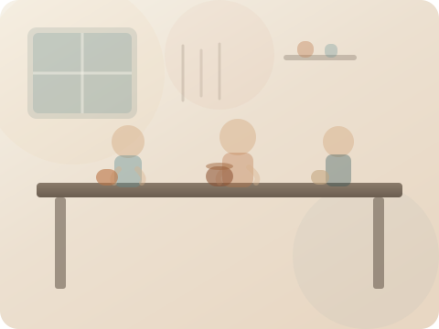

Community-first
Sliding scale tuition, open studio hours, and public events.
Coastal Community Clay
Yachats, Oregon
About
Coastal Community Clay supports ceramic education, residencies, and public programming for the central Oregon coast.
We exist to make clay education accessible, foster creative connection, and keep coastal craft traditions thriving. Our nonprofit model keeps tuition affordable, expands scholarships, and supports artists who live and work on the coast.

Sliding scale tuition, open studio hours, and public events.
Programs led by resident artists, visiting instructors, and peers.
We celebrate coastal ecology, story, and design in our work.
Our board and staff are makers, educators, and volunteers. We partner with local schools, libraries, and cultural organizations to widen access to the arts.
Director: Sarah Hawklyn

Donations keep our kilns firing and fund youth programs and artist residencies.